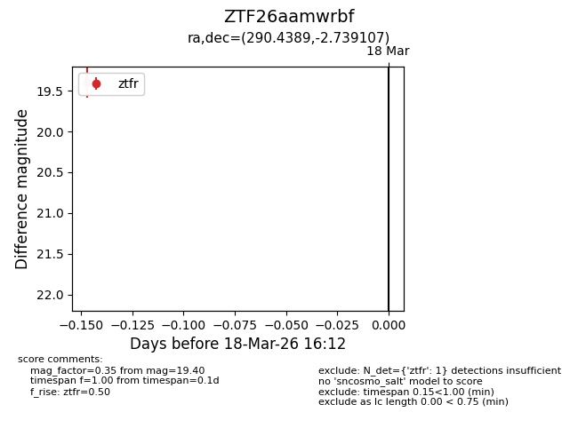
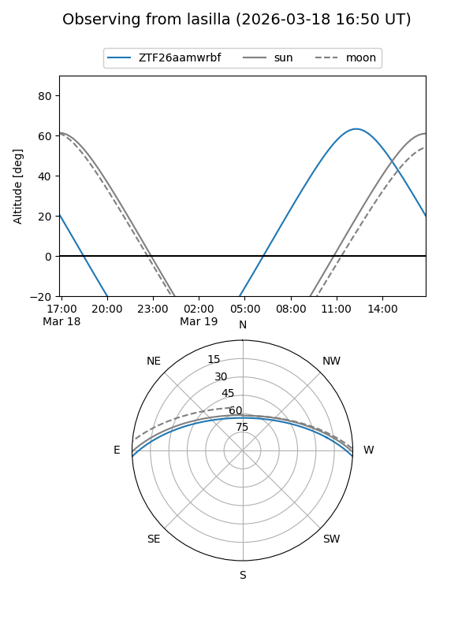
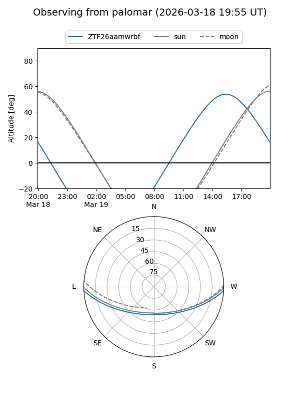

ZTF26aamwrbf
Target ZTF26aamwrbf at 2026-03-18 16:14
Aliases and brokers:
FINK: link
Lasair: link
ALeRCE: link
alt names
ZTF26aamwrbf (ztf,fink_ztf)
Coordinates:
equatorial (ra, dec) = 290.4389,-2.73911
equatorial (HMS+DMS) = 19:21:45.33,-02:44:20.79
galactic (l, b) = (33.9471,-7.99265)
Flags:
Photometry:
last ztfr=19.40
1 ztfr detections
Lightcurve

Visibility


Additional plots